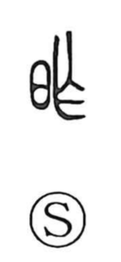

昨

Uncategorized
Kun: | On: saku
yesterday ・ previous
Explanation
昨 is a phono-semantic character. The element 乍 serves as the phonetic, pointing to the on-reading saku; 乍 itself originally depicted branches bent to make a fence. In older usage a near-homophonous graph, 徂 (“to go”), with the sense of “immediately,” sometimes appeared in its place, and the sound also resonated with 昔 (seki, “former times”), which in antiquity could even be used for 夕, “evening.” With 日, “day,” added as the semantic indicator, the character came to signify “the day before,” that is, yesterday.